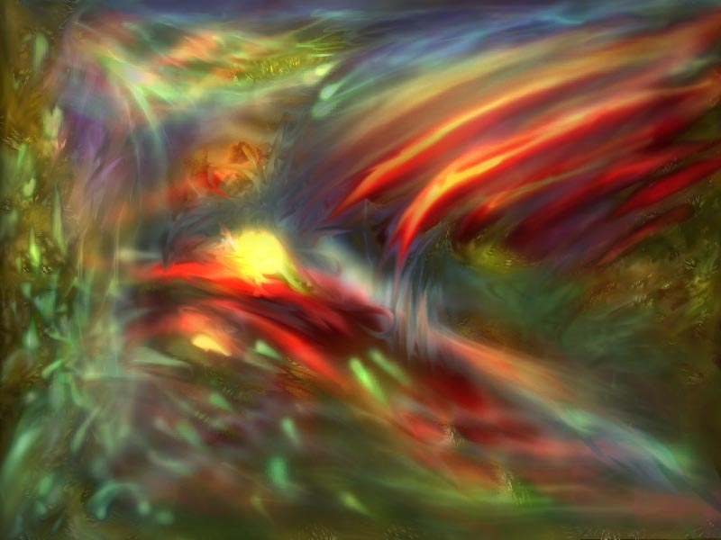

|  Attempt03 Attempt was made by taking sensitive readings of electromagnetic fields over time in the plasma table at the Physics department here at OSU. The results are grayscale; the image you see as 'attemp03' is a composite of many of these with coloring added. Each layer has only one color, but I used similar colors for scans taken one right after another. The electromagnetic fields in the plasma table array are quasi-linear submanifolds, and change very rapidly. I wrote a program to watch the fields and grab snapshots when something 'interesting' showed up. For the majority of the time the E.M.F. array is dull and boring. The array is excited, causing the cool patterns, by injecting RMG particles (which are electrons, but with their spins reduced or enhanced). When I started using these to create a piece of art I had over 10,000 images to work with! Needless to say, most of them were not interesting, or only interesting in isolation. Attempt03 is a combination of around 200 of these, and took me something like 80 hours to composite (over the period of a month or so). (Ok, so if you didn't guess, the above description is fiction. =) Ryan Micheal Geiss is a good friend, and he knows that electrons can not have reduced or enhanced spins... if you didn't think it was funny, you're not geek enough.) (There are no higher resolutions available, thanks for thinking about asking.) |